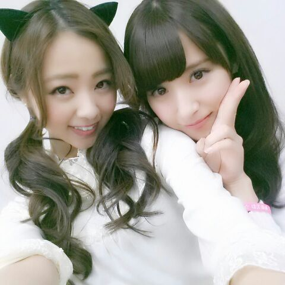

こんちわんわ〜ん(*´ω｀*)
Rottyダォ。

次回の乃木坂の「の」 の告知しますね♪
文化放送10月27日20時半
岐阜放送10月30日21時
ラジオ福島11月2日22時半
山梨放送11月2日18時放送
OK？ OKー ! !
はいっ とゆーこととで
今日は 写真集『乃木坂派 』の
お渡し会がありました。
皆ありがとう！
直接渡せるってやっぱ気分いいねっ
メンバーのサインイリだしねん．
まひろのサイン当たったかた〜(*´ω｀*)？ おめでとちゃんぽん鍋。
・・・・・・・といきなり
片目隠し。
どーだ。(・_・)
なかなかなもんであろう。
あっ、そーだよそーだよ。
今日 多く言われたセリフ‥
「あれ、ろってぃ-黒髪ぢゃない。」
、、、、 嘘だろーーー(´；ω；`)
うん。
確かに真っ黒ぢゃない。茶髪でもない。
そう、暗い色なのは確か ! !
明日ちゃんとした証拠写真載せるから
まっちょってくれい(*/_\)
それでねっそれでねっ聞いてくれまぷか〜？
美容院に行って「カラーを暗くしたいんですー。」って言ったら
生まれて初めての言葉を言われたんだよ。「んー、色白だからあまり真っ黒にはしない方がいいよ〜♪」
ムムっ？？ いっ、色白？
あ〜 なるほどぉ〜 それは初めて言われたなぁ〜 どっちかと言えば〜小麦色 ... 。
まあ いいだー。
色白であろうが色黒であろうが
こだわりはなーーい \(*´∇｀*)ノ
あはは〜ん
ではっ //
皆で輪になって 敷布団の上で寝ましょう。
おやすみんちゃい 。 Rotty